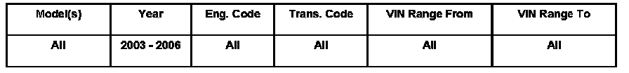
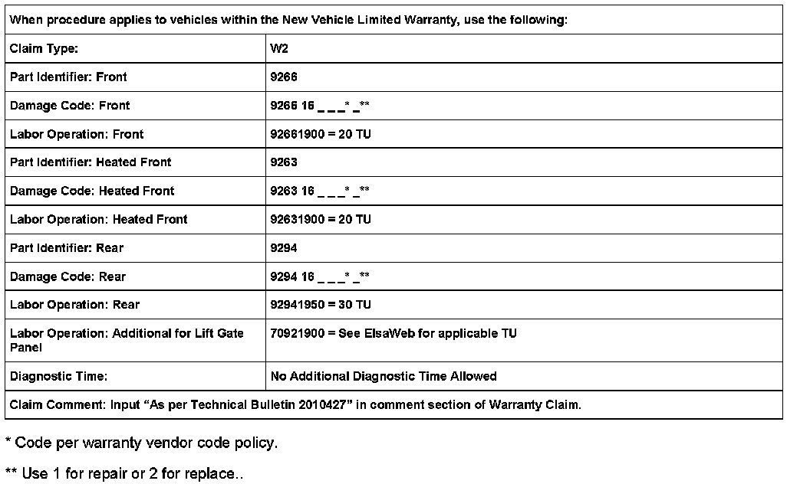

Washer System - Washer Jets (Front or Rear), Restricted
ConditionWasher Jets (Front or Rear), Restricted

92 06 07 Dec. 11, 2006 2010427 Supersedes T.B.Group 92 number 05-01 dated Mar.14, 2005 due to inclusion into ElsaWeb.
Technical Background
Window washer spray jet will not spray or has reduced flow because of restriction.
Production Solution
No production change required.
Service
Remove restricted nozzle.Refer to Repair Manual Group 92 Windshield wiper and washer system - Windshield washer jets, removing and installing in ElsaWeb.
Tip: When using compressed air to clear the washer jet, blow in direction of flow only.
- Clear obstruction using compressed air.
Tip: If obstruction can not be cleared, replace the washer jet.
- Before installing new or original washer jet, flush the washer lines by running the washer pump without the washer jet for 30 seconds.
- Install the new or original washer jet and verify operation.Refer to Repair Manual Electrical equipment Group 92-Windshield wiper and washer system "Windshield washer jets, checking and adjusting" in ElsaWeb.

Warranty
Required Parts and Tools
No Special Parts required.Always see ETKA for the latest part(s) information.
No Special Tools required.